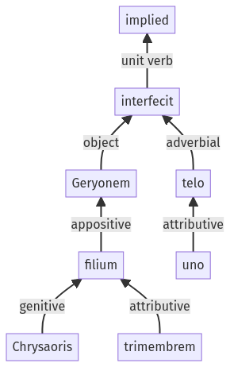

Hyginus, Fabuleer, 30pr.11.1-30pr.11.7a
30pr.10.13-30pr.10.17a | 30pr.12.1-30pr.12.20a
Sentence 429
30pr.11.1-30pr.11.7a
Geryonem Chrysaoris filium trimembrem uno telo interfecit.
1 Geryonem Chrysaoris filium trimembrem uno telo interfecit
Geryonem Chrysaoris filium trimembrem uno telo interfecit.
Highlighting:
- connecting words
- unit verb
- subject
- object
Color code:
- independent clause (level 1, transitive verb)
